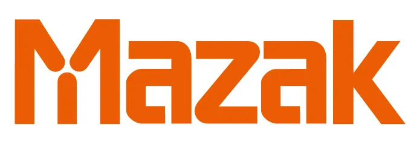
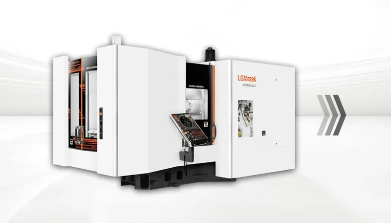
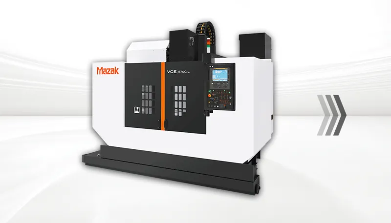
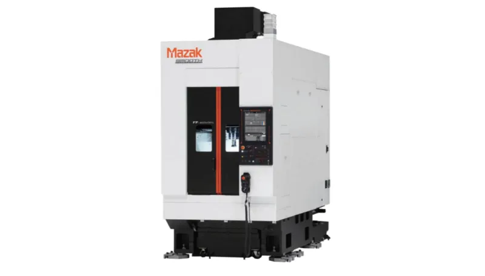
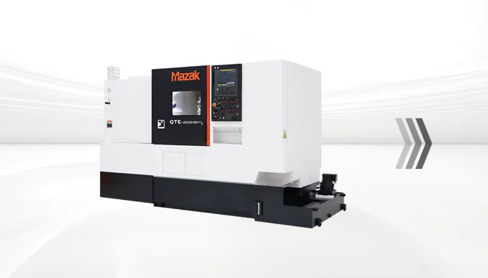
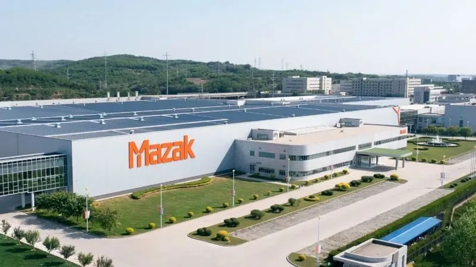
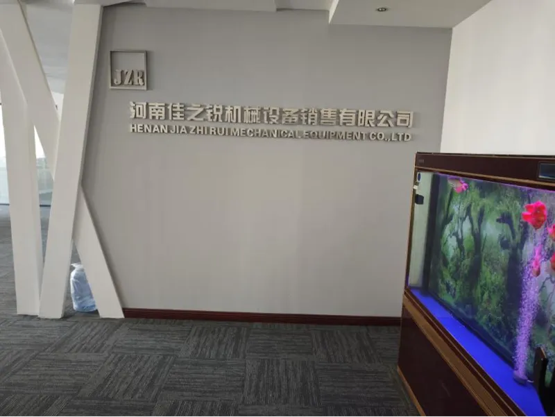
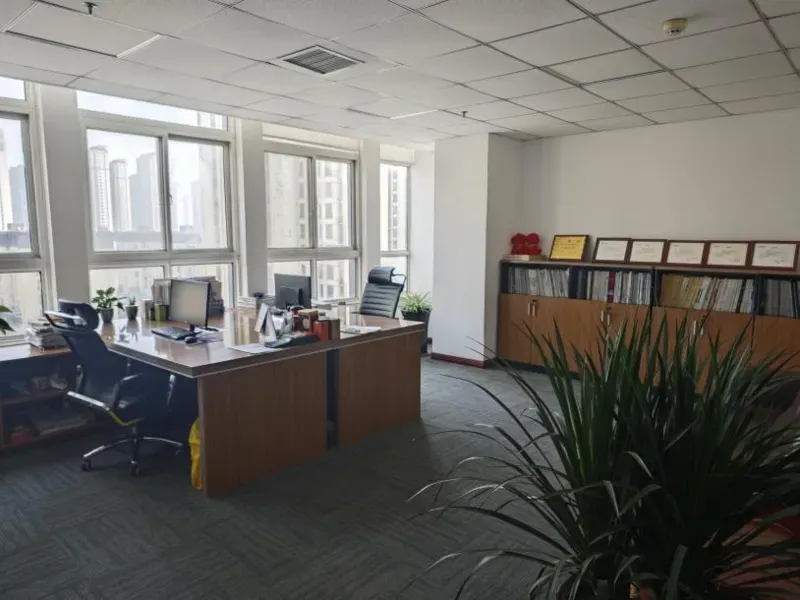

世界顶尖机床品牌马扎克，重磅亮相5月郑州工博会
首页 / 世界顶尖机床品牌马扎克，重磅亮相5月郑州工博会
作为中西部工业品牌大展，第20届郑州工博会将于2024年5月7-10日盛大举办，将以12大展馆、7万平方米的总规模，7万专业观众、20余场会议论坛、1场中部工业采购节等内容恢弘呈现。集结国内外一线品牌展商，深度服务中西部制造业市场汽车整车及零部件、新能源、农业机械、国防军工、食品加工、医疗器械、工程机械、钢结构等产业链发展需求，以全产业链的布局促进上下游交流、合作、交易。
提前预登记，参观企业及品牌装备，莅临展会现场更有惊喜观众好礼等您，期待您的到来！欢迎咨询：15038392685
河南佳之锐机械设备销售有限公司将携马扎克Mazak爆款产品亮相第20届郑州工业装备博览会
马扎克Mazak
展位号：CT005

主要产品
卧式加工中心 HCN6000L

产品优势简介：
主轴种类丰富，能以最佳切削条件对各种材料进行加工；
X、Y、Z轴快速进给速度达到 60m/min，x轴线性导轨安装面采用带高度差的立柱倾斜式结构，在维持高刚性的同时，减轻了立柱重量；
标配 1° x 360 定位分度工作台，备有可进行 0.0001° x3600000 定位的NC旋转工作台；
可选配丰富的自动化功能，从单机到加工生产线，实现适合不同生产形态的自动化；
HCN 系列产品可以广泛满足汽车、电子、家电、航空航天、模具、仪器仪表、产品加工等各行业对中小型精密零件高效率的加工需求，从多品种小批量生产到量产加工均可实现。
立式加工中心 VCE570CL

产品优势简介：
标配高速大扭矩主轴 18.5 KW、10000 rpm、118 N.m；
X/Y/Z轴配置THK高刚性滚柱导轨，刚性及稳定性更好；
标配的热屏蔽(THERMAL SHIELD)功能可以有效控制环境变化对机床精度的影响，确保稳定连续的加工精度；
盘式结构刀库，由独立电机驱动，刀套选择采用随机选择模式，换刀高速、便捷；
机床设计符合人体工程学，操作和维护更加便捷；
VCE 系列产品可实现对铝材料的高速加工及铸铁、钢等材料的重切削加工，满足一般机械行业的各类精密加工需求。
立式加工中心 FF-400V/30 L

产品优势简介：
标准主轴 12000min -1可用于铁、铸件、铝等材料的加工。内置电机结构，可进行强力高速切削、提高生产率；
X/Y/Z 驱动轴在加工区域上部的设计，提高了机床的排屑性能；
配置了适用于小型零件加工的高速、高精度 BT-30 主轴；
丰富的工作台种类，适用于多种加工用途。固定工作台机械设计，可实现后期多样的工作台形式变化及自动化功能增加；
便捷舒适的机床操作，可轻松进行维护保养工作；
MAZATROL SmoothEz操作系统可轻松使用，缩短程序创建时间；
数控车床 QTE-200MSY L

产品优势简介：
搭载高速、高精度内置电主轴结构，减少了高速运转下的振动和热变位，保证良好的加工精度和表面粗糙度，实现了良好的主轴刚性和冷却效果；
该机型采用 MAZAK-EZ数控系统，在FANUC 数控系统上增加了 MAZAK特制功能，使得机床操作更加方便、更加安全、加工精度更加稳定加工效率更高；
简约紧凑的机械设计，加工视野开阔，不断追求节能环保；
QTE 系列产品不仅能够胜任汽车零部件的大批量加工，也完全可以满足 JOB SHOP、液压行业、轴承行业等一般机械行业的加工需求。适用于铸铁、钢铁、有色金属等材料的切削加工。
作为马扎克在中国市场推出的高速、高精度车削中心设备全系列机床，QTE系列机型由2轴向 M/MY/MS/MSY拓展，进一步系列化，可根据客户的不同生产形态，满足多样化需求。
提前进行观众预登记，享豪华大礼！欢迎咨询：15038392685

企业简介
山崎马扎克（中国）有限公司是日本山崎马扎克株式会社在中国设立的全资子公司。全面负责马扎克在中国市场的研发、生产、销售和服务。通过长期投资，已建成了涵盖生产、销售、工程技术、售后服务、备件支持的全面客户支持体系，已拥有1座备件中心、2座生产基地、3个技术中心、7大销售区域，以先进的全球化模式实施本土化经营，服务于中国制造业。
河南佳之锐机械设备销售有限公司
河南佳之锐机械设备销售有限公司位于郑州市金水区二环路11号院19号楼东3单元29号，注册资金500万人民币，是一家专业经营销售国内外知名品牌机械设备的公司，专注于机械设备顾问式咨询与服务，为客户提供全方位设备管理系统解决方案。公司始终本着“以德立企，质量为本，诚信经营，长期服务”的宗旨，着眼于市场需求，求真务实，勤恳守信，赢得了业界顾客的一致好评！


公司专业经营机床设备、机械设备及配件，从事货物和技术的进出口等多项业务范畴，服务网络覆盖全国大部分地区，在军工、汽车、航空航天、船舶、重工等领域有着广泛、稳定的客户群.我们将以最热忱的服务，最精湛的技术，为客户提供更合理、更流畅、更经济的制造工艺设备。始终秉承为用户提供机械设备整体解决方案的经营理念，以感恩的姿态回报社会，勤拼搏，勇开拓，助推机械设备行业和社会经济快速发展！